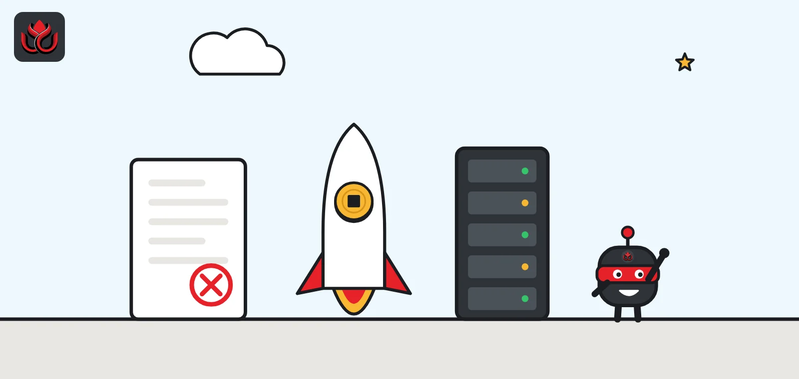
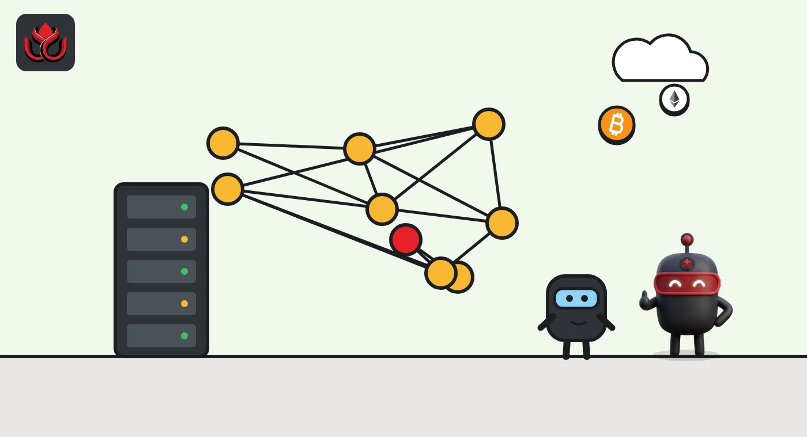
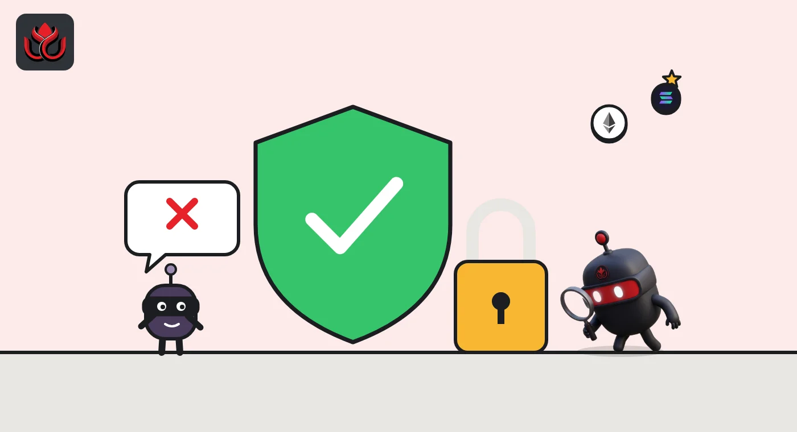

Bitcoin Core 32.0 never shipped. Version 32.1 is out with 200 peer slots and a wallet fix
The new major release of Bitcoin's main node software arrived on October 27 under a different number than planned. It raises default peer slots to 200, speeds up block checks and closes a wallet bug that could run commands on a node. Nodes on 29.x or older are now out of support.

Key points
- Bitcoin Core 32.0 was tagged but never released because of unnamed "last-minute issues." Version 32.1 shipped instead on October 27, 2026.
- Default peer connections jump from 125 to 200, block checks run in parallel, and a wallet bug that could run commands on a node is fixed.
- Versions 29.x and older are now end of life, and three medium- or high-severity bugs fixed in 30.0 will be disclosed about two weeks later.
Why there is no 32.0
Bitcoin Core, the software most Bitcoin nodes run, released version 32.1 on October 27, 2026, skipping 32.0 entirely. The official release page says 32.0 was tagged but never fully announced or released. The only reason it gives is "last-minute issues."
A tag is a fixed point in the code history that marks a release. In this case the team marked 32.0, found a problem, and moved straight to 32.1 rather than ship a version it was not happy with. The project has not said what the issue was.
The release does not change Bitcoin's consensus rules, the rules every node must agree on. Node operators can upgrade at their own pace, and nothing forces a split in the network. The project's lifecycle page now lists the 32.x line with a release date of October 27, 2026.
What is new for node runners
The release notes on the release page list a long set of changes. The ones most operators will notice:
- More connections. The default maximum of automatic peer connections rises from 125 to 200. Transaction-relaying inbound peers may use at most 50% of inbound slots by default, set by a new -inboundrelaypercent option.
- Faster block checks. Nodes can now fetch the coins a block spends in parallel while validating it. The default is 8 threads, with a maximum of 16, and 0 turns the feature off.
- Smarter fees. The estimatesmartfee tool now combines the old block-based estimator with a new one that reads the current mempool (the queue of unconfirmed transactions). It returns the lower of the two results.
- Smaller index. The optional transaction index uses less disk space. Existing indexes keep working, but operators must delete and rebuild them to get the savings, which can take a few hours.
- PSBT version 2 by default. Tools that create partially signed transactions now default to version 2 of the format, with a new argument to choose.

How many connections, how much relay
For ordinary nodes, the connection change is the biggest shift. To keep the old behavior, the notes say to use -maxconnections=125 -inboundrelaypercent=100. Explicit values above 2,000 are now clamped with a warning.
Outgoing transaction relay now uses one global backlog instead of per-peer limits. The default rate stays at 14 transactions per second, boosted 2.5 times for outbound peers. A new cap of 12MB of transactions per 10 minutes has been added. The private broadcast queue is capped at 10,000 entries, with at most 1,000 send attempts per transaction.
The release credits 128 contributors, plus translators.
Default automatic peer connections in Bitcoin Core
connections
Source: Bitcoin Core 32.1 release notes
The security fixes
Two fixes matter most. The first is a wallet bug. On non-Windows systems, an authenticated RPC user (RPC is a node's remote control interface) with permission to create wallets could run arbitrary commands as the node's system account when -walletnotify was set. The trick was a wallet name containing special replacement characters. The fix treats wallet names literally. The attack needed RPC access, wallet creation rights and that specific setting.
The second is a privacy fix for private broadcast, a feature that sends your own transactions through Tor. When a newer-style connection to a normal IPv4 or IPv6 peer failed, the fallback retry could skip the Tor proxy and connect directly. That could expose the sender's IP address.
The software also drops libevent, an outside library, in favor of its own HTTP server. Some edge cases change: clients that are not allowed are now disconnected instead of getting an error page. Wallet names containing path elements such as ".." are no longer allowed.

Timeline
Bitcoin Core 31.x line released
32.1 release page published on bitcoincore.org; 32.0 never fully released
Versions 29.x and older reach end of life
Planned disclosure of three medium- or high-severity bugs fixed in 30.0
Support deadlines and what gets removed
The project maintains the latest three major versions, so 32.1's release pushed 29.x and older out of support. Under the security disclosure policy, medium- and high-severity bugs become public two weeks after the last affected release reaches end of life. The 32.1 notes say three such bugs, fixed in 30.0, will be disclosed on that schedule. No low-severity bugs were fixed in 32.1.
The notes also flag future removals. Support for an old I2P encryption type will be removed in or before version 34. The project is weighing whether to drop CJDNS network support. The next major release plans to stop building for Windows with Microsoft's MSVC compiler once an alternative is ready. Several older RPC options, including -walletrbf and removeprunedfunds, are deprecated.
LC Insight analysis
This section is our reading of the facts above, not a statement of fact.
- We think skipping a number is a good sign, not an embarrassing one. Shipping a release with a known problem would have been worse, and the team said plainly what happened, even if not why.
- If you run a node on 29.x or older, treat the coming bug disclosure as your deadline. Once the details are public, unpatched nodes become easier targets.
- Going from 125 to 200 default connections quietly rewires the network. As nodes upgrade, there should be more open slots for new nodes to join, which helps decentralization at no cost to users.
What's next
- The security disclosure for three bugs fixed in 30.0, due about two weeks after release
- Whether the project explains the issue that sank 32.0
- Upgrade uptake among public nodes
- The CJDNS removal discussion
Disclaimer. This article is based on public information and the sources listed below as of the update time shown. It is for information only and is not investment, legal or tax advice. Figures may change as companies and authorities publish new data.